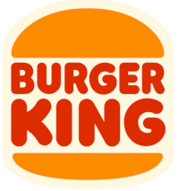

O Burger King (BK) é uma das maiores e mais conhecidas redes de fast-food do mundo, famosa por seus hambúrgueres grelhados no fogo.
O McDonald's é a maior e mais conhecida rede mundial de restaurantes de fast-food, fundada em 1940 nos EUA. Famosa pelos hambúrgueres (como o Big Mac), batatas fritas e o McLanche Feliz, a marca opera em mais de 100 países com foco em rapidez, consistência, conveniência e preços acessíveis.
O Subway é uma das maiores redes de restaurantes fast-food do mundo, especializada na venda de sanduíches personalizados (estilo submarino), saladas e wraps. A marca é reconhecida pela montagem feita na hora e na frente do cliente, focando em ingredientes frescos e uma alternativa mais rápida ao fast-food tradicional.